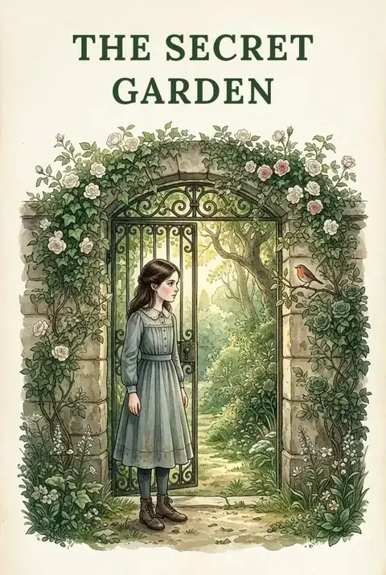
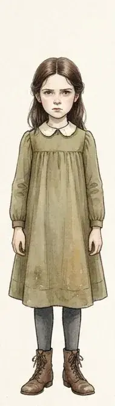
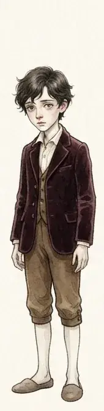
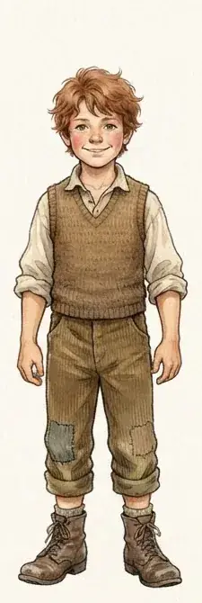
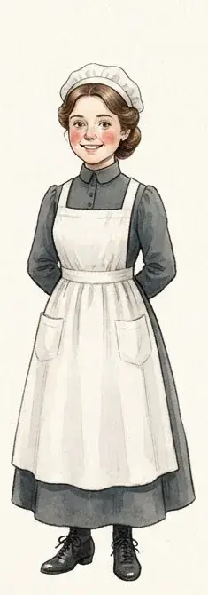
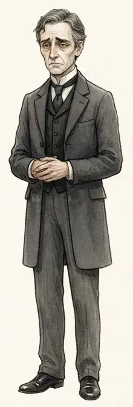

The Secret Garden
by Frances Hodgson Burnett
ClassicEnglish
Orphaned in India, Mary Lennox is sent to live at her uncle’s gloomy manor on the Yorkshire moor. With a robin, a rusty key and two new friends, she discovers a locked garden and a hidden boy, and watches everything come back to life.
8 chapters. Reading edition with chapter summaries.
Table of Contents
Dramatis Personae
-

Mary Lennox Orphaned girl sent to live in Yorkshire -

Colin Craven Mr. Craven’s hidden, ailing son -

Dickon Sowerby Martha’s brother, a boy of the moor -

Martha Sowerby Cheerful Yorkshire housemaid -

Archibald Craven Mary’s uncle, master of Misselthwaite Manor
Chapters here are formatted for reading convenience from the authoritative edition.